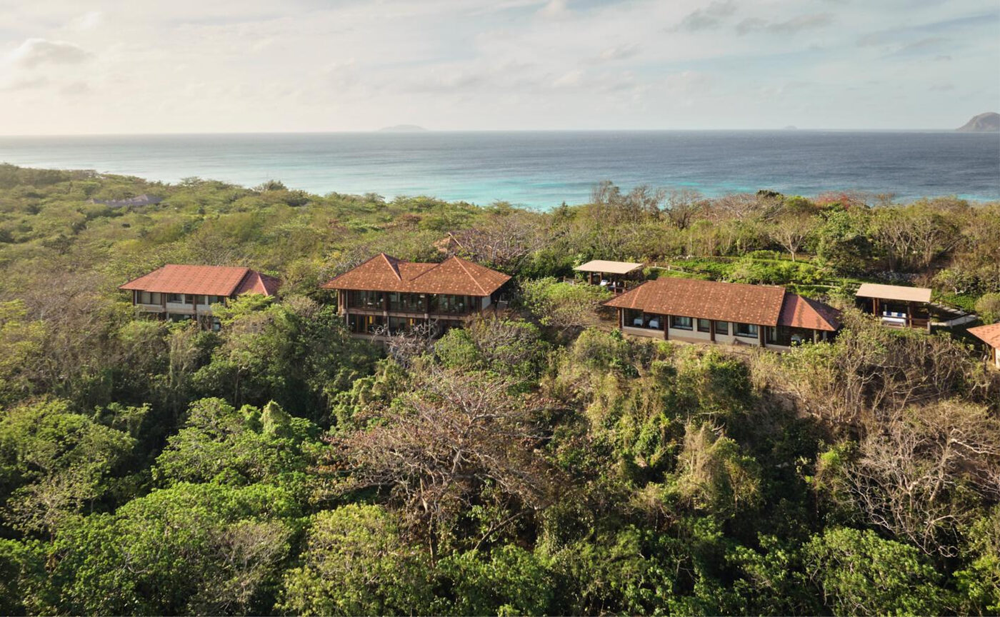

Every casita on Pamalican Island measures 68 square metres. The new one measures 257, and it sits by itself on the southeastern shore, where the sun comes up.
Amanpulo has run its private island in the Cuyo Archipelago of northern Palawan since the 1990s, and the arithmetic of its casitas has held steady for most of that time. Beach, Treetop and Hillside, with or without a pool, each 68 square metres, each a variation on the same single-pavilion idea. The Grand Beach Pool Casita breaks the pattern. At 257 square metres, 2,766 square feet, it is nearly four times the size of its neighbours, and it does not sit among them.
Aman put it on the southeastern edge of the island, the quiet end, facing the sunrise. There is a private plunge pool, an outdoor jacuzzi and a stretch of sand reached directly from the deck. A beach sala stands at the waterline. Two outdoor showers wait on the way back in.
The beach at Pamalican Island, Cuyo Archipelago · Courtesy of Aman
Inside
The interiors are modern Filipino, calm rather than showy, under vaulted ceilings of natural timber with a single ceiling fan at the centre. The bathroom takes up a share of the floor plan that most hotels reserve for the bedroom: twin vanities, dual showers, a soaking bathtub and an oversized walk-in closet. There is a king-size bed, a pair of desks, outdoor divans, a Nespresso machine and a personal bar.
The rest works like every stay on the island. Breakfast daily, afternoon tea at the Clubhouse, refreshments in the room, a morning snorkelling trip from the beach, a scheduled wellness class, non-motorised watersports whenever the water calls.
The sunrise side of an island is a strange thing to leave empty. Amanpulo finally built on it.
The Splendid EditUp the hill
The Aman Spa holds the island's highest ground, on the northern hillside. Six treatment suites, hydrotherapy suites, a Pilates studio with reformers, a yoga and meditation pavilion, and an obstacle course called the Jungle Trail threaded through the forest outside. A cold plunge anchors the newest programme, Cold Immersion Therapy, which moves from breathwork into the plunge and contrast bathing before it lets you rest.
The treatment list stays Filipino. Hilot alternates hot and cold using banana leaves and cold-pressed coconut oil. A full-body massage named Pag-asa, the Filipino word for hope, sends its proceeds to the Andres Soriano Foundation, which funds education and healthcare on Manamoc, the neighbouring island. The spa's resident specialist, Elmer Munar, folds Thai stretch therapy into training sessions in the gym.

The forested hillside above the resort, home to the Aman Spa · Courtesy of Aman
The island
Pamalican remains a place you fly to or not at all. A 14-seat twin-engine turboprop leaves Manila for the island's private airstrip, ninety minutes each way, with a car waiting at Manila airport to carry same-day arrivals to Aman's own lounge and hangar. Once there, sandy tracks lead to deserted coves, the Kawayan Bar floats offshore, and dinner moves between the Clubhouse, the Beach Club, the Lagoon Club and the Picnic Grove.
Villas handle the larger parties, up to four bedrooms with a private chef and butler attached. Kitesurfing season opens on 1 December. Guests with time can claim a complimentary fourth night through the Extend Your Stay offer.
Most resorts put their headline suite at the centre of things, where the arrival dock and the pool bar already are. This one walked it out to the empty end of the beach and left it there, alone with the early light.
Casita specifications, spa programmes and inclusions are as published by Aman and remain subject to change. Details through aman.com.
Photography courtesy of Aman — © Aman, Amanpulo, Palawan